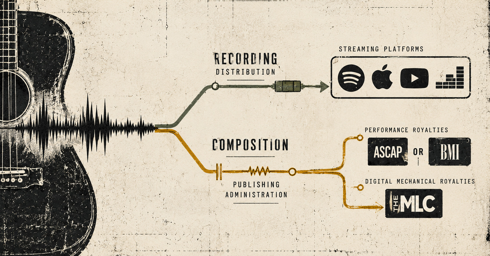

Resources / Publishing
Distribution Is Not Publishing
Why getting your music onto streaming platforms doesn't mean your songwriting royalties are handled.
By Resistance & Ground

You finished the recording, uploaded it, and watched it land on streaming services. A little money even showed up in your distributor account. Fair enough: the song is out, and the distributor is paying you.
It would be nice if that meant every part of the business was handled.
It does not.
If you wrote the song, you have something besides the recording to account for: the composition. That's the music and lyrics underneath the particular version you released. You can make another recording of it. Someone else might perform it.
The recording and the composition are separate works, with separate rights and possible income.
Distribution gets the recording onto platforms. Publishing administration deals with the composition: its ownership information, registrations, and the royalties someone is responsible for collecting.
A distributor delivers the recording to services and pays you according to your distribution arrangement. That doesn't automatically mean someone has registered the composition, checked the writer shares, or collected every royalty owed for the song.
One stream can generate income tied to the recording and income tied to the composition. Seeing the first payment doesn't tell you where the second one went.
The release button was never a collect-everything button, however much we might wish it were.
So what is publishing doing after release?
Publishing starts with knowing what you have.
Each original song needs accurate writer names and agreed shares. If you wrote the whole thing, say so in the places that register the composition. If you wrote it with someone else, get the split straight and keep a record.
A band can survive an awkward conversation about percentages. It has a harder time surviving that conversation after a song starts earning money.
Then the song has to be registered and administered through the right channels.
In the United States, performing rights organizations (PROs), such as ASCAP and BMI, handle public performance royalties for compositions. Those can arise from radio, television, live performances, and eligible digital uses.
The Mechanical Licensing Collective (The MLC) handles U.S. digital audio mechanical royalties under the blanket license for eligible streaming and download services. It receives usage reports, matches recordings to registered compositions, and distributes royalties to the appropriate rightsholders.
These organizations handle different kinds of income.
The MLC doesn't collect every mechanical royalty worldwide. Your PRO doesn't collect every kind of royalty generated by your song. Other territories and uses can involve other organizations and collection arrangements.
Your distributor's upload form doesn't replace those jobs.
If somebody already administers your publishing, find out exactly what they're collecting and where.
The point is to make a map of the money, not to sign up for every service whose name appears in a search result.
But TuneCore and DistroKid offer publishing services
They do.
That doesn't mean distribution automatically includes them.
Companies such as TuneCore and DistroKid have offered separate publishing administration services alongside recording distribution. Those arrangements may involve additional enrollment, agreements, registration information, and fees or commissions.
The distinction matters because using a company to distribute your recordings doesn't, by itself, establish that the company is administering your compositions.
Check the actual services attached to your account and the terms of any publishing agreement. Don't assume a composition has been registered simply because the recording appears on Spotify.
Needing publishing administration doesn't necessarily mean handing somebody ownership of the song.
You may retain ownership and administer your work yourself, or authorize a publishing administrator to register and collect specified royalties under an agreement.
The MLC refers to songwriters who retain and handle their own publishing rights as self-administered songwriters.
If you already have a publisher or administrator for a song, check that arrangement before registering the same share elsewhere.
More hands on the same claim can make a mess instead of a payment.
Check the song, not just the streaming numbers
For every original song, keep one dependable record.
Not a dozen screenshots. Not three conflicting spreadsheets. One record you can trust.
At minimum, check the following:
- Writers and splits: Record the legal names of every songwriter and the agreed ownership percentages.
- PRO registration: Confirm that the composition is registered with the appropriate performing rights organization and that the relevant writer and publisher information is accurate.
- Mechanical royalties: Determine whether you, your publisher, or your administrator is responsible for eligible U.S. digital mechanical royalties through The MLC.
- Recording information: Keep the recording's ISRC and other relevant identifying information alongside the composition details. Use the work's ISWC when one has been assigned.
- Matching: Investigate recordings that haven't been correctly matched to their compositions.
- Existing agreements: Review any publishing administration or co-publishing agreements before assigning collection responsibilities elsewhere.
Then compare those records against what your distributor, PRO, The MLC, and any publishing administrator actually show.
A missing registration or unmatched recording is something to investigate. Watching the stream count climb won't fix it.
If you recorded a cover you didn't write, you haven't become the songwriter by uploading your version. The underlying composition still belongs to its respective rightsholders.
But when the song is yours, don't mistake getting the recording into stores for finishing the publishing.
You can handle the administration yourself or hire someone to do it. Either way, somebody has to know who owns the song, where it's registered, and who's supposed to collect.
The distributor got your recording out into the world. The song still needs tending.
Sources and further reading
- U.S. Copyright Office — What Musicians Should Know About Copyright
- The Mechanical Licensing Collective — How It Works
- The Mechanical Licensing Collective — Self-Administered Songwriters
- The Mechanical Licensing Collective — Song Matching Tool
- ASCAP and BMI — Song registration and royalty collection information
- TuneCore — Distribution and Publishing Administration
- DistroKid — Publishing administration information
This article provides general educational information, not legal or tax advice. Collection rules, service offerings, and agreement terms can change. Review current requirements and your agreements before registering works or appointing an administrator.